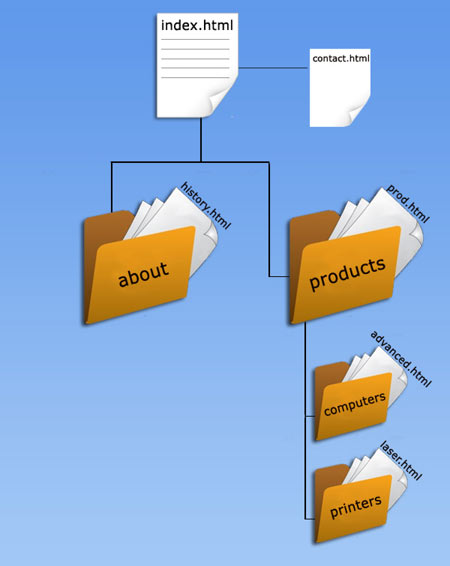

1. What are the lines needed to add a Javascript file named scripts and CSS file named styles? Assume they are in the same directory
2. How would a radio button be added to a form?

If you are at the advanced.html file, how would you use relative links to access index.html?
3. What attribute would be added to the body tag to change the background color to gray?
4. <input type = "button" >
How would this button use a function called add()? (Only the event handler is needed)
5. How is a 300 by 500 canvas initiated in HTML? Specfically HTML 5.